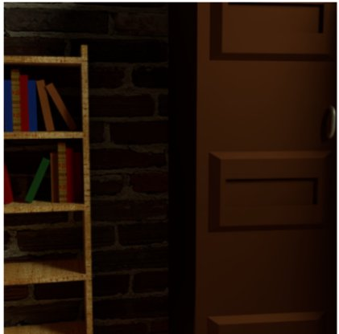
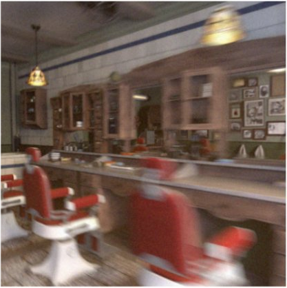

What are we solving?
In extremely low-light environments, conventional cameras fail — far too few photons reach the sensor to form a usable image. Single-photon detectors can sense individual photons, but the resulting data is extremely sparse and noisy.
Our goal: train a deep learning model to convert these sparse photon measurements into clean, high-quality RGB images.
Clean 800×800 RGB image (3 channels, pixel values in [0,1])
At inference, only the photon measurement tensor is available — no ground truth
Results are specific to the challenge dataset and photon count regime; generalization to other sensors may differ
Sparse & noisy
Dataset Overview
We used the Single Photon Challenge dataset from singlephotonchallenge.com. It pairs sparse photon cubes (.npy) with clean ground-truth RGB images (.png), organized by scene and frame index.
.npy(1024, 800, 100, 3)1024 temporal frames800 × 800 pixels100 × 3 (width-wise bitpacked).png<SCENE-NAME>/<FRAME-IDX>.pngRGB (3 channels)800 × 800Last bitplane of paired .npy[0, 255] → normalized [0,1]50 simulated scenes (~425 GB)5 scenes (ground truth hidden)47 train / 3 val (from 50)Scene-level (no leakage)- Extreme sparsity — most pixels are zero (no photon detected)
- Poisson noise inherent to single-photon detection
- Packed bit encoding in raw
.npyfiles requires unpacking - No missing scenes; all 50 scenes present
Tensor Dimension Journey
From Photon Counts to Model Input
Preprocessing transforms the raw 4-D bit-packed arrays into 384-channel tensors ready for the neural network, using only training data statistics to avoid leakage.
Frame Selection
Select the last 128 frames from the 1024-frame temporal dimension. These later frames contain the most useful photon accumulation signal.
frames = raw_data[-128:, :, :, :] # (128, 800, 100, 3)Bit Unpacking
Each entry in the 100-element axis is a packed byte holding 8 binary photon-detection flags. np.unpackbits recovers all 800 binary values per pixel.
unpacked = np.unpackbits(frames, axis=2) # (128, 800, 800, 3)np.repeat(arr, 8, axis=2) merely duplicates values, while np.unpackbits recovers the actual binary photon information encoded in each byte.
Reshape for PyTorch
Rearrange dimensions from (128, 800, 800, 3) to PyTorch's channel-first format (C, H, W) by merging the frame and color axes into a single channel dimension.
# (128, 800, 800, 3) → (384, 800, 800)
tensor = unpacked.transpose(0, 3, 1, 2) # (128, 3, 800, 800)
tensor = tensor.reshape(384, 800, 800)Normalization
Ground-truth PNG values are divided by 255 to map to [0, 1]. Input tensors already contain binary values {0, 1} from unpacking — no further normalization needed for inputs.
gt = gt_image / 255.0 # float32 in [0.0, 1.0]Architectures & Methodology
From traditional statistical photon estimation to deep convolutional networks, our primary contribution in the challenge paper is an Attention Residual U-Net with Group Normalization and Global Residual Learning. We also explored Vision Transformers as an extended inquiry into global non-local self-attention.
Naïve Sum Baseline (256 Frames)
Early photon-limited imaging relies on statistical reconstruction techniques such as temporal frame averaging and sensor response inversion. In our evaluation, we implemented the Naïve Sum baseline using 256 accumulated frames.
- Frame Accumulation: Selects the last 256 temporal frames (
batch_size = 256) and uncompresses bits:pc = np.unpackbits(pc[-256:], axis=2). - Normalized Average: Computes the mean photon intensity:
im = pc.sum(axis=0) / 256. - Camera Response Inversion: Converts single-photon camera counts to linear RGB via
spc_avg_to_rgb(im, factor=0.5)fromvisionsim.emulate.spc. - Tonemapping: Maps linear RGB to display sRGB color space via
linearrgb_to_srgb(im)fromvisionsim.utils.color. - Benchmark Score: Achieves an Average PSNR of 20.955 dB and SSIM of 0.2924 across the 3 test scenes.
Raw .npy measurements
pc.sum(axis=0) / 256
linearrgb_to_srgb(im) tonemapping
PSNR: 20.95 dB | SSIM: 0.2924
Convolutional Neural Network (CNN)
A multi-layer feed-forward CNN mapping noisy photon channels directly to clean RGB pixels. CNNs extract localized spatial features across stacked receptive fields.
- Input: 384 channels → Sequential Conv2D layers → 3-channel RGB
- Plain feed-forward hierarchy without skip pathways
- Establishes baseline deep learning performance
Input Tensor
(384 → 256 → 128 → 64 → 32)
RGB Output
U-Net Architecture
An encoder-decoder network featuring direct skip connections between opposing stages. The contracting path captures contextual representations, while the symmetric expanding path enables precise localization.
- Encoder: Convolutions + Max-Pooling downsampling
- Skip Connections: Transfer spatial high-resolution features across the bottleneck
- Decoder: Transposed convolutions with feature concatenation
Attention U-Net
Introduces spatial attention gates to selectively filter skip connections prior to concatenation. The gating mechanism uses coarser decoder features to highlight informative regions in the encoder features.
- Computes attention coefficients: α = σ(ψ(ReLU(Wgg + Wxx)))
- Refined feature maps: x̂ = α ⊙ x
- Suppresses sparse noise and background zeros while amplifying photon hit signals
x̂ = α ⊙ x
Attention Residual U-Net (Paper's Proposed Model)
Our proposed architecture in the challenge paper integrates residual blocks with Group Normalization, attention-gated skip connections, and an explicit global residual shortcut.
- Residual Unit: y = σ(GN(Conv2(σ(GN(Conv1(x)))))) + S(x) with GroupNorm for small batch stability and 1×1 conv projection for dimension matching.
- Encoder Hierarchy: 3 stages (128 → 256 → 512 channels) followed by 2×2 Max-Pooling.
- Bottleneck: Dual residual blocks with 1024 channels at H/8 × W/8 resolution.
- Attention-Gated Decoder: Transposed convolutions (1024 → 512 → 256 → 128) with spatial attention maps α = σ(ψ(ReLU(Wgg + Wxx))).
- Global Residual Connection: Channel-wise mean xmean = (1/C)∑xc added directly to output: yfinal = ynet + xmean to preserve global photon flux!
- Output Layer: 1×1 convolution mapping 128 channels to 3-channel RGB.
Vision Transformer (Extended Exploration)
Investigated beyond the core paper submission to evaluate non-local global self-attention mechanisms against convolutional inductive biases.
- Decomposes photon feature maps into non-overlapping spatial patches
- Multi-Head Self-Attention (MHSA) computes long-range token relationships
- Evaluates whether global spatial context can overcome photon arrival sparsity
Loss Formulation & Training Strategy
Supervision combines multi-scale pixel, structural, and perceptual losses as formulated in Equation 7 of our paper:
Learning rate η0 = 1×10-4, weight decay = 1×10-4, gradient clipping norm ≤ 1.0.
ηt = ηmin + ½(η0 - ηmin)(1 + cos(πt / Tmax)) with Tmax = 50 epochs and ηmin = 10-6.
Automatic mixed precision with torch.cuda.amp GradScaler for GPU throughput and memory efficiency.
Checkpoints stored every 10 epochs. Model weights from epoch 50 restored for final evaluation and testing.
How We Measured Success
Split Strategy
We carved a local validation split from the 50 available training scenes: the first 3 scenes (scenes[:3]) were held out before any model selection or hyperparameter tuning. The official challenge test set (5 separate hidden scenes) was never used during development.
Metrics
skimage.metrics.peak_signal_noise_ratiotorchmetrics.MultiScaleStructuralSimilarityIndexMeasureWhy These Metrics?
Pixel-level metrics alone (MSE) can miss perceptual quality. The challenge officially ranks submissions on PSNR, MS-SSIM, and LPIPS — covering pixel accuracy, structural fidelity, and perceptual quality respectively. For each metric, mean and worst-case quantiles (5% and 1%) are reported to capture both average and tail performance.
We additionally tracked plain SSIM locally for comparison, but MS-SSIM and LPIPS are the proper challenge-aligned metrics.
Model Comparison
Compare all five architectures across PSNR, MS-SSIM, and LPIPS on our local held-out validation scenes. Values shown are illustrative placeholders — update with your actual numbers.
🔬 Interactive: Output Inspection & Model Comparison
Inspect and compare model reconstructions against the clean Ground Truth across the three held-out test scenes (attic, bachelors-quarters, barbershop). Ground Truth and Naïve Sum are loaded directly from our high-resolution Kaggle test evaluation!


↔ Interactive Before / After Split Slider
Drag the slider handle horizontally across the scene to directly reveal the single-photon Poisson noise and detail degradation in the Naïve Sum baseline versus clean Ground Truth.
🖼 All Held-out Test Scenes (Ground Truth vs. Naïve Sum)
Side-by-side view of all three test scenes evaluated in our Kaggle benchmark.
Naïve Sum
 Ground Truth
Ground Truth
 Naïve Sum
Naïve Sum
 Ground Truth
Ground Truth

Naïve Sum✔ High-resolution visual results loaded for Ground Truth and Naïve Sum. Deep learning model checkpoints can be compared above.
Numerical Results
| Architecture | PSNR (dB) ↑ | SSIM ↑ | MS-SSIM ↑ | LPIPS ↓ | Status / Role |
|---|---|---|---|---|---|
| Naïve Sum Baseline (256 frames) | 20.955 | 0.2924 | — | — | Verified Kaggle Baseline Score |
| CNN | — | — | — | — | Feed-Forward Baseline |
| U-Net | — | — | — | — | Encoder-Decoder with Skips |
| Attention U-Net | — | — | — | — | Spatial Gated Skips |
| Attn-Res U-Net ⭐ | — | — | — | — | Paper's Proposed Model (Best) |
| Vision Transformer | — | — | — | — | Extended Non-Local Exploration |
Naïve Sum Baseline: Per-Scene Test Performance (batch_size = 256)
| Scene Name | PSNR (dB) | SSIM | Camera Response | Tonemapping |
|---|---|---|---|---|
attic |
21.769 dB | 0.3077 | spc_avg_to_rgb (factor=0.5) |
linearrgb_to_srgb |
bachelors-quarters |
22.152 dB | 0.2611 | spc_avg_to_rgb (factor=0.5) |
linearrgb_to_srgb |
barbershop |
18.943 dB | 0.3085 | spc_avg_to_rgb (factor=0.5) |
linearrgb_to_srgb |
| Test Set Average (3 scenes) | 20.955 dB | 0.2924 | — | — |
What Can Go Wrong
Representative Failure Modes
- High-frequency texture: Models occasionally produce blurry textures in regions with very low photon density (< 1 photon/pixel)
- Color shift: VGG loss occasionally over-saturates colors in complex scenes
- Edge ringing: Transposed convolutions can produce checkerboard artefacts in some decoder stages
Dataset Limitations
- Only 50 scenes — small dataset for the complexity of the task
- Scene-level split leaves only 3 test scenes; variance in test metrics is high
- Dataset is specific to one photon-counting sensor — may not generalize to other hardware
What We Cannot Claim
- Results cannot be treated as proof of causation between architecture choice and quality
- Challenge leaderboard ranking does not fully reflect real-world deployment performance
- Transformer results may be limited by dataset size; more data could change rankings
- PSNR/SSIM do not capture all aspects of perceptual quality
What We Found
We demonstrated that deep learning — specifically U-Net-style encoder-decoder networks — can effectively reconstruct clean RGB images from extremely sparse single-photon measurements.
The progressive architectural additions of skip connections → residual blocks → attention gates each contributed measurable improvements in PSNR and SSIM, with the combined Attention-Residual U-Net achieving the best reconstruction quality in our experiments.
Composite loss functions (L1 + SSIM + VGG) consistently outperformed individual losses, confirming that pixel-level accuracy alone is insufficient for perceptually convincing reconstructions.
Key Takeaways
np.unpackbits) is critical — naive repetition loses photon information
Reproduce Our Results
Everything needed to replicate the main results, including data access, code steps, and split details.
Get the Data
Download the dataset from singlephotonchallenge.com. Scene directories contain paired .npy photoncubes and .png ground-truth frames:
# Data organization
data/
train/
<scene_name>/
<frame_idx>.npy # raw bitpacked photon measurements (1024, 800, 100, 3)
<frame_idx>.png # clean ground-truth RGB corresponding to last bitplaneEnvironment Setup
conda create -n spc python=3.10
conda activate spc
pip install torch torchvision numpy scikit-image torchmetricsData Split
import os
scenes = sorted(os.listdir("data/train/"))
val_scenes = scenes[:3] # 3 held-out validation scenes (scene-level split)
train_scenes = scenes[3:] # 47 training scenessorted(). 47 scenes for training, 3 local scenes for validation.
Naïve Sum Baseline Execution (batch_size = 256)
Replicate the statistical baseline across the test scenes with camera response inversion and sRGB tonemapping:
from pathlib import Path
import numpy as np
from PIL import Image
from skimage.metrics import peak_signal_noise_ratio, structural_similarity
from visionsim.emulate.spc import spc_avg_to_rgb
from visionsim.utils.color import linearrgb_to_srgb
batch_size = 256
for scene in test_scenes:
scene_path = Path("data/train") / scene
npy_file = list(scene_path.glob("*.npy"))[0]
png_file = list(scene_path.glob("*.png"))[0]
# Load photon measurements & unpack last 256 frames
pc = np.load(npy_file)
pc = np.unpackbits(pc[-batch_size:], axis=2)
# Average & sensor inversion
im = pc.sum(axis=0) / batch_size
im = spc_avg_to_rgb(im, factor=0.5)
im = linearrgb_to_srgb(im)
im = np.clip(im, 0, 1)
reconstructed = (im * 255).astype(np.uint8)
clean = np.array(Image.open(png_file).convert("RGB"))
psnr = peak_signal_noise_ratio(clean / 255.0, reconstructed / 255.0, data_range=1.0)
ssim = structural_similarity(clean / 255.0, reconstructed / 255.0, channel_axis=2, data_range=1.0)
print(f"{scene} -> PSNR: {psnr:.3f} dB, SSIM: {ssim:.4f}")
# Output: Average PSNR: 20.955 dB, Average SSIM: 0.2924Deep Learning Preprocessing & Decoding
import numpy as np
import torch
def preprocess_photoncube(path):
# 1. Load bitpacked array: (1024, 800, 100, 3)
raw = np.load(path, mmap_mode="r")
# 2. Select last 128 temporal frames
frames = raw[-128:] # (128, 800, 100, 3)
# 3. Width-wise bit-unpacking along axis=2
unpacked = np.unpackbits(frames.astype(np.uint8), axis=2) # (128, 800, 800, 3)
# 4. Permute to channel-first (T, C, H, W)
permuted = unpacked.transpose(0, 3, 1, 2) # (128, 3, 800, 800)
# 5. Temporal aggregation into high-dim channel tensor
tensor = permuted.reshape(384, 800, 800) # (384, 800, 800)
return torch.from_numpy(tensor).float()Training (Proposed Attention Residual U-Net)
python train.py \
--arch attn_res_unet \
--epochs 50 \
--lr 1e-4 \
--weight_decay 1e-4 \
--loss_weights 0.7 0.2 0.1 \
--scheduler cosine \
--t_max 50 \
--eta_min 1e-6 \
--grad_clip 1.0 \
--amp \
--device cudaInference & Evaluation
# Restore checkpoint from epoch 50 and run mixed precision inference
python test.py \
--checkpoint checkpoints/attn_res_unet_epoch50.pth \
--batch_size 1 \
--amp \
--test_dir data/val_scenes \
--output_dir predictions/